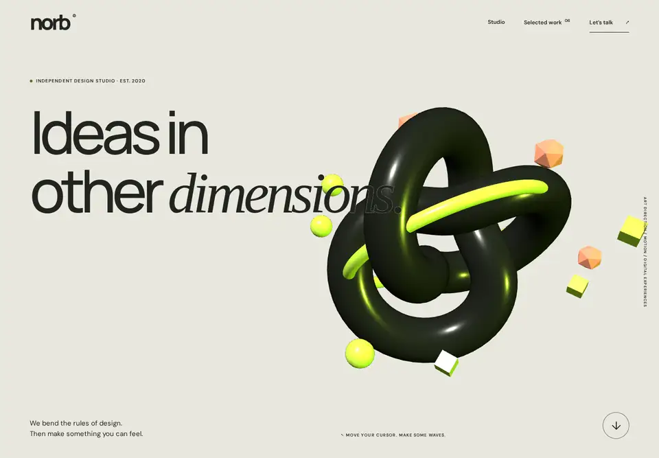

Art Studio 3D

模型：GPT-6.1-sol · Judge 未评测


题面
Generate an innovative and immersive 3D art studio home page. The studio's name is Norb Studio. Use abstract 3D shapes and motion graphics to create a dynamic and engaging user experience, demonstrating the creativity of the studio. The homepage should feature: 1. A 3D loading screen that showcases a rotating cube, each face containing one letter and repeats Norb Studio's name as it spins. 2. A hero section with a full-screen 3D environment that includes interactive floating shapes. 3. A nice narrative section that speaks the story and goal of Norb Studio as you scroll down, with smooth transitions and bold visual effects. 4. A gallery section that displays a carousel of art pieces created by Norb Studio vertically, arrayed in a 3D helix shape and rotates as the user scrolls down. 5. A contact section with a 3D interactive form, and when the user hovers over the input fields, they animate and change color, providing a tactile experience.
Judge 完整评分与 Rubrics（总分 未评测）
本页展示 GPT-6.1-sol 的原始交付物。仓库未包含对应 Judge 评分记录，因此没有可展示的质量分数。下方为本次同步时仓库中的 rubric，尚未执行本题评测。
Judge 五维评分
| 维度 | 原分 /4 | 权重 | 加权分 | Judge 理由 |
|---|---|---|---|---|
| 指令完成度 | — | 25% | — | 未评测；仓库中无本题对应 Judge 记录 |
| 三维表现与空间合理性 | — | 35% | — | 未评测；仓库中无本题对应 Judge 记录 |
| 交互与动态体验 | — | 20% | — | 未评测；仓库中无本题对应 Judge 记录 |
| 视觉设计与创意表达 | — | 10% | — | 未评测；仓库中无本题对应 Judge 记录 |
| 前端实现与稳定性 | — | 10% | — | 未评测；仓库中无本题对应 Judge 记录 |
Common rubric：通用检查与完整评分锚点（点击展开）
版本 3.0。G01–G05 是检查清单，不是五项分数；G01 支持三维表现、G02 支持视觉设计、G03/G04 支持交互、G05 支持稳定性评分，指令完成度还需结合本题 T 项判断。原始 JSON。
| 检查 ID | 主要维度 | 通用要求（原文） | 判定 |
|---|---|---|---|
| G01 | 三维表现与空间合理性 | Inspect genuine task-relevant depth and geometry across at least three distinct views where appropriate; fixed-camera designs may use read-only runtime probes. | 未评测 |
| G02 | 视觉设计与创意表达 | Inspect composition, materials, light, color and legibility without preferring realism, a framework or a particular aesthetic. | 未评测 |
| G03 | 交互与动态体验 | Exercise the primary UI and verify meaningful scene/state feedback; do not invent extra controls. | 未评测 |
| G04 | 交互与动态体验 | Exercise repeat, reverse, boundary and recovery behavior appropriate to the requested and advertised flows. | 未评测 |
| G05 | 前端实现与稳定性 | Inspect 1440x900 and 390x844 layouts, lower controls, reload and console/resource diagnostics. A narrow viewport does not certify real touch hardware. | 未评测 |
| 维度 | 权重 | 观察内容（原文） | 0分锚点（原文） | 1分锚点（原文） | 2分锚点（原文） | 3分锚点（原文） | 4分锚点（原文） |
|---|---|---|---|---|---|---|---|
| 指令完成度 | 25% | Fulfil the subject, purpose, style and explicitly requested flows. Do not add requirements. | Subject or purpose is wrong; the basic requested activity is unavailable. | Correct theme but the main requested flow is missing. | A main flow works, with a substantial requested flow missing or broken. | Core flows work; name the specific minor requested omission. | All stated requirements are delivered coherently across tested states. |
| 三维表现与空间合理性 | 35% | Judge task-relevant geometry, scale, depth, occlusion, materials, lighting and key viewpoints. | No relevant effective 3D content or the key subject is absent. | Recognizable attempt with severe shape, connection or depth errors. | Initial view works but operation reveals major spatial or material errors. | Key views are coherent with local surface, lighting or material defects. | Shapes, spatial relations, lighting and materials consistently serve the task. |
| 交互与动态体验 | 20% | Judge discoverability, meaningful feedback, sequences, recovery and advertised controls. | Required primary operation cannot be performed. | Controls react superficially without the promised scene/state change. | Single actions work but sequences or required recovery fail. | Required and repeated flows work, with local discoverability or transition issues. | Sequences, combinations and recovery remain reliable and natural. |
| 视觉设计与创意表达 | 10% | Judge composition, type, color, hierarchy and a coherent expression serving this brief. | Subject or information is unreadable. | Severe overlap or missing hierarchy; requested style is not recognizable. | Readable basic style, with obvious UI/scene or layout inconsistencies. | Composition, typography, color and 3D form a coherent expression. | Purposeful details and state transitions consistently improve understanding. |
| 前端实现与稳定性 | 10% | Judge resources, desktop/mobile layout and repeated operation; no uncalibrated performance thresholds. | Opening is followed by a blocking failure. | Frequent missing key resources, freezes or crashes. | Usable in the main view but major narrow-layout or repeat-operation problems. | Reliable tested flows, with local nonblocking and explained issues. | All standard and repeat checks are stable, readable and reliably loaded. |
Specific rubric：本题要求与逐项判定（点击展开）
题型 constrained；版本 3.0。原始 JSON。
| ID | 必做 | 主要维度 | 要求（原文） | 验收操作（原文） | 预期结果（原文） | 判定 |
|---|---|---|---|---|---|---|
| T01 | 是 | 三维表现与空间合理性 | An actual 3D Norb Studio homepage presents interactive floating abstract shapes in a full-screen hero. | Open the homepage and use its offered floating-shape interaction. | A full-screen Norb Studio hero contains floating abstract 3D shapes that visibly respond. | 未评测 |
| T02 | 是 | 交互与动态体验 | A 3D loading screen shows a rotating cube, with exactly one letter on each face, conveying and repeating Norb Studio's name as it spins, and transitions into the page. | Reload and observe the loading cube before, during and after its rotation. | Each visible cube face has one letter; the spinning presentation conveys Norb Studio and transitions to the homepage. | 未评测 |
| T03 | 是 | 视觉设计与创意表达 | Scrolling reveals a readable studio narrative with smooth visual transitions. | Scroll through the narrative in both directions. | The studio story and goals remain readable through continuous visual transitions. | 未评测 |
| T04 | 是 | 三维表现与空间合理性 | A vertical artwork carousel forms a recognizable 3D helix and responds to scrolling. | Scroll through the artwork gallery and reverse direction. | Artwork follows a vertical 3D helix and the carousel rotates with scrolling. | 未评测 |
| T05 | 是 | 交互与动态体验 | The contact form has interactive 3D treatment, with field hover/focus feedback and usable inputs. | Hover the contact fields, focus them and enter sample text. | The 3D-treated fields animate and change color on hover while remaining usable. | 未评测 |
完整测试场景（Scenarios）
| ID | 操作指令（原文） | 对应判据 |
|---|---|---|
| S01 | Observe the loading-to-hero sequence and inspect floating shapes from pointer movement. | G01, G02, T01, T02 |
| S02 | Scroll through the narrative and helix; inspect multiple artworks, then enter contact fields. | G03, T03 |
| S03 | Reverse the scroll, revisit the gallery and move focus through the form; check that page states remain usable. | G04, T04, T05 |
| S04 | Inspect a 390px-wide viewport, including lower controls and focus navigation. Perform the task through the primary UI without relying on precise 3D camera manipulation. Record any clipped, obstructed or unreachable content. | G05 |